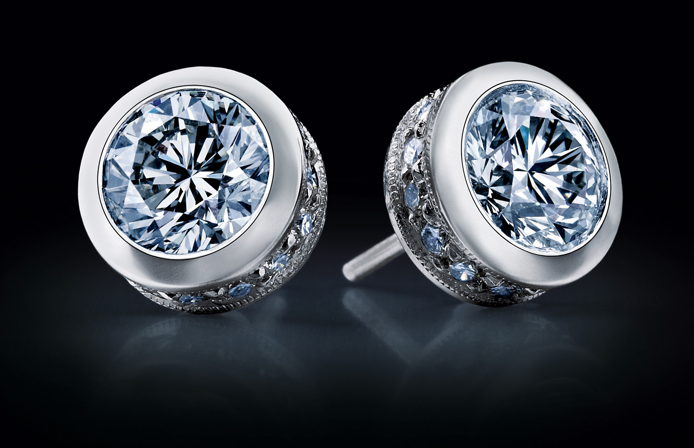
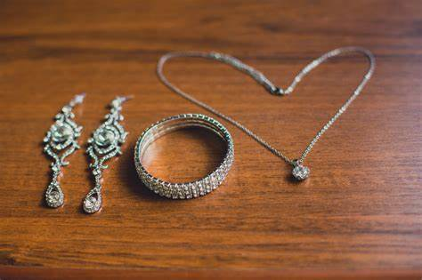
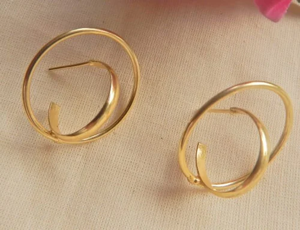
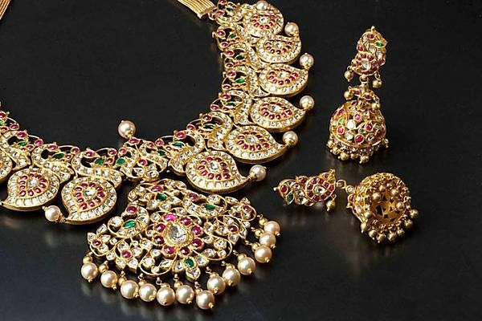
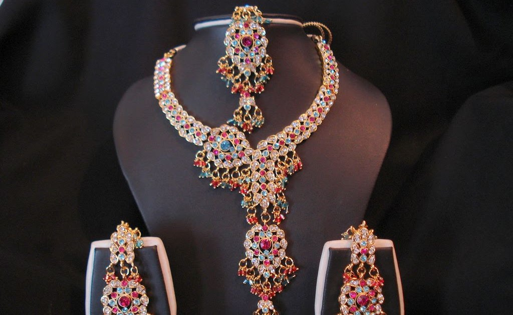
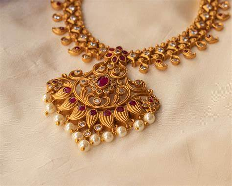
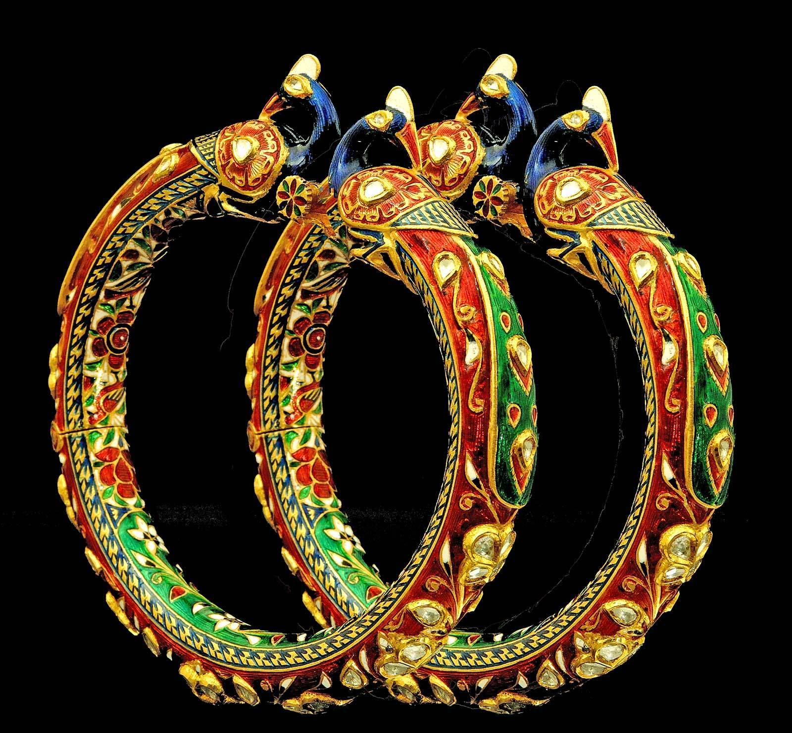

Sr No. |
Name |
Image |
About |
| 1 |
Diamond Jewellary |
 |
Diamond jewellery is one of the most exciting treasures that a woman can own in her lifetime. Be it an earring, engagement ring or a lavish pendant, diamond always adds a unique touch of elegance on its own. Nothing can beat the alluring nature of the beauty of a perfectly chosen diamond piece and no other form of jewellery lives up to the mark or the standard set by it. Because of their timeless nature, they are passed down generations and never goes out of trend. This is all the more reason why women are keen to choose every aspect of a diamond from their cuts, colour or clarity with utmost precision. Shop Latest Diamond jewellery.. |
| 2 |
Diamond Jewellary Set. |
 |
Necklace
A necklace is more than just a trendy accessory that completes an outfit or a look. It symbolizes femininity and charm by accentuating the fine features of the neck. Although it draws attention to the cleavage, it doesn’t denote sexuality at all.
Bracelet
Many people wear bracelets to showcase their personalities. As bracelets can have different materials aside from metal, like rubber and leather, it’s a perfect way to symbolize who we are.
Often, it’s not one of the things we notice first about a person. As such, it’s a nice way to improve a look or denote wealth more subtly.
. |
| 3 |
Hoop Spiral Earrings |
 |
Huggie earrings take their name from their design. Most often they consist of small, metal hoops that 'hug' the ear, very close to the earlobe. They are also known as huggie hoop earrings. Huggies are designed with two different back closures, lever or hinged back (latch) closings. |
| 4 |
Diamond Necklace |
 |
They say that diamonds are surely a girl’s best friend and has always occupied a special place of prominence at weddings. The bling-bling of it, amazes the onlookers and adds jazz to the bridal trousseau, as well. This is a South Indian jewellery piece that you must own.. |
| 5 |
Long Necklace |
 |
Long necklaces are often called Rani Haar and may have one or several strings. It is their length that makes them seem so imperial. A long necklace is a classic accessory for brides, and it looks fantastic combined with another necklace (especially a choker). |
| 6 |
Necklace Jewellery |
 |
This jewelry set uses high quality Kundan Stones and gold polish which remains untarnished. It is a luxury branded Jewelry set. The jewelry will not loose its look and polish so you can enjoy it as a heirloom jewelry.. |
| 7 |
Meenakari Jewellery
|
 |
Although, this enamelled jewellery originated in Rajasthan, but with time it has become quite popular all over the world. In this, precious stones are set first before enamelling them with heat-resistant colours like red, yellow, blue, white and green. One will usually find designs of peacock, flower, fish, or paisley on the sets.
. |